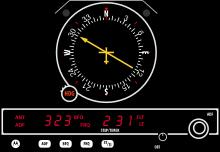
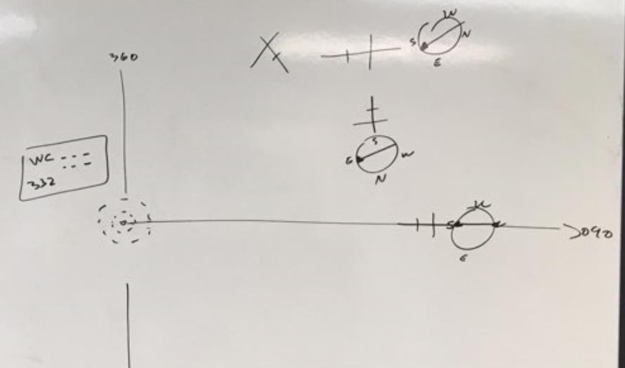

ADF
Objective
To teach:
- How to use ADF to find a position
- To track IB/OB
- To intercept IB/OB
- To find a position using 2 NDBs
Motivation
Why:
- Cross Country
- Licensing requirement
Threshold Knowledge Test
Essential background Knowledge
- Equipment on the ground: NDB station (small dotted circles on the chart)
- Data box for NDB (EX. Name: White Rock NDB, Identifier: WC (.-- -.-.), Frequency: 332 KHz )
- No radial (only track)
- Equipment in the aircraft:
- ADF antenna on the bottom of the aircraft usually

(Fixed card relative bearing indicator & ADF receiver)
- Frequency selection & volume control
- Fixed card ADF (North is always pointing top)
Procedures
Always do this step before using ADF:
Tune(frequency) – Identify(mores code) – Set(MC with HI)
- Find a position
- T-I-S (HI/MC)
- BFS = MH + Tail of the needle
EX) your heading is 040 and if the tail of the ADF needle is on 050 = you are on 090 track
- Track OB
- Find a position
- Turn to MH + tail of the needle
- Confirm
- Track home inbound
- T-I-S
- Turn to MH + head of the needle
- Confirm
- Intercept OB (Ex. intercept and track OB 090 track at 90°)

- T-I-S
- Turn parallel (Ex. 090)
- Check head needle: Right = turn right / Left = turn left
- Turn heading 090 +090 = 180°
- Intercept head needle at 90°
- Turn to 090
- Intercept IB (EX. Intercept and track IB 270 track at 90°)
- T-I-S
- Turn parallel (EX. 270)
- Check head needle: Right = turn right / Left = turn left
- Turn heading 270 – 090 = 180°
- Intercept head needle at 90°
- Turn to 270
- Position fix using 2 NDBs
- Same position finding procedure twice
Safety